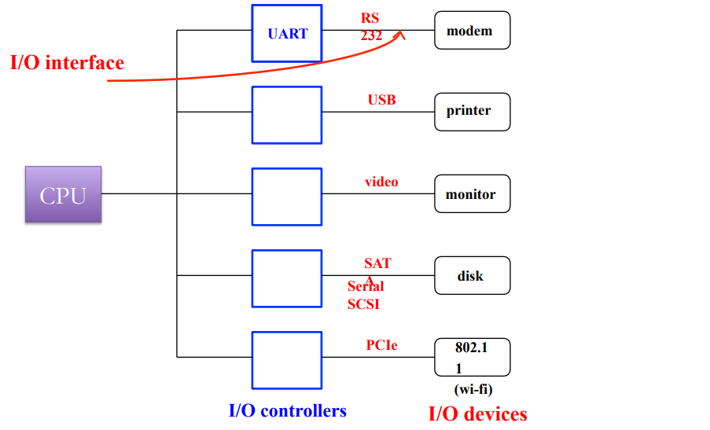

ARM Assembly and Input/Output
- Chapter 2 (2.3.3)
- Chapter 3 (3.1 - 3.4)
- Chapter 4 (4.1 - 4.3)
Conditionals in Assembly
Moving imediate values to registers
- For small immediate (8-bits):
mov r3, #val ;val can be 0 to 255
mvn r3, #val ;val can be -256 to -1
- For larger values
ldr r3, =val ;val can be any 32-bit value
ldris a pseudo-op!
Conditionals in assembly
int a = 1;
int b = 2;
int x;
if (a < b) {
x = 1;
} else {
x = 2;
}
.section .text
ldr r0, =vars
ldr r1, [r0]
ldr r2, [r0, #4]
cmp r1, r2
bge else
mov r2, #1
b endif
else:
mov r2, #2
endif:
str r2, [r0, #8]
.section .data
vars:
.word 1 ;a
.word 2 ;b
.word 0 ;x
Loops in assembly
Basic example
int a = 1;
int b = 2;
while (a != b) {
// loop body
}
.section .text
ldr r0, =vars
ldr r1, [r0]
ldr r2, [r0, #4]
loop:
cmp r1, r2
beq end
; loop body
b loop
end:
.section -data
vars:
.word 1 ;a
.word 2 ;b
Another example
int a = 1;
int b = 2;
while (a && b) {
// loop body
}
.section .text
ldr r0, =vars
ldr r1, [r0]
ldr r2, [r0, #4]
loop:
cmp r1, #0
beq end
cmp r2, #0
beq end
; loop body
b loop
end:
.section -data
vars:
.word 1 ;a
.word 2 ;b
Function Calls in Assembly
Function/procedure/method calls
- Essential even for a small program
- Most ISAs provide som suppoert for such calls
ARM support for function calls
- Jumping to a function:
bl labelblis "branch and link"- set
r14(Link Register) toPC + 4 - set
PCtolabel
- set
- Returning from a function:
- Needs to move
LRtoPC- E.g.
mov r15, r14
- E.g.
- No special instruction
- (
bx lr??)
- (
- Needs to move
Example of function call in assembly
int add(int a, int b) {
return a + b;
}
main() {
int x = 5; y = 10;
add(x, y);
}
add:
add r0, r0, r1
mov r15, r14
main:
mov r0, #5
mov r1, #10
bl add
- But wait!
- We never passed the parameters to the callee!
- Neither did the callee return the result.
ARM register convention on function calls
- Parameters are passed:
- In registers r0 to r3
- Additional parameters are passed via
stack
- Values are returned in
r0andr1 - Caller saved registers:
r0-r3 - Callee saved registers:
r4-r14 r9andr12are special purpose registers, where specifics depend on implementation
Nested Function Calls in Assembly
int addNum (int a, int b) {
return a + b;
}
int add (int a, int b) {
return addNum(a, b);
}
main() {
int x = 5, y = 10;
add(a, b);
}
addNum:
add r0, r0, r1
mov r15, r14
add:
bl addNum
mov r15, r14 ;stuck in infinite loop!
main:
mov r0, #5
mov r1, #10
bl add
- Problem: Overwrites the link register (r14)
- Solution: Use stack to save the return address
Stack
- Stack is a region of memory that operates in last-in first-out manner.
- Stack Pointer (r13) points to the last occupied position in the stack.
- Stack grows downwards from higher address towards lower addresses
- Special instructions to access stack:
- push to store data on stack. e.g. push {r4, r5}
- pop to load data from stack. e.g. pop {r2}
Nested function calls using stack
addNum:
add r0, r0, r1
mov r15, r14
add:
push {r14}
bl addNum
pop {r15}
main:
push {r14}
mov r0, #5
mov r1, #10
bl add
pop {r15}
Other uses of stack
- Stack is used to save callee-saved register (r4-r12) if they are needed in computations.
- Stack can used to pass parameters and return values
- Registers are limited
- Stack is also used for the local variables within the function
RISC vs CISC
Should an ISA be simple or complex?
-
ISAs range in complexity
-
ARM is relatively simple ISA
-
Simple vs Complex ISA:
-
High Level Language (HLL) Code:
a[0] = b[0] + 5; -
Assembly Code:
-
Simple (ARM):
ldr r3,[r1] add r4,r3,5 str r4,[r2] -
Complex:
add [r2], [r1], 5
-
CISC vs RISC ISA
- Complex Instruction Set Computer (CISC)
- register-memory architecture: appeared in early computers, like x86
- Computers programmed in assembly → HLL features as instructions
- Very few registers → operands can be in memory
- Very little memory → variable length instructions to minimize code size
- Reduced Instruction Set Computer (RISC)
- Appeared in 80’s: Used in ARM, MIPS, SPARC, RISC-V ISAs
- High-level languages and compilers were already in fashion
- More register, more memory, faster clock ü°™ fixed length/format instructions for easy and fast decoding
- load-store architecture
Input/Output Devices
I/O Devices
| Device | Behaviour | Partner | Data Rate (Mbit/sec) |
|---|---|---|---|
| Keyboard | Input | Human | 0.001 |
| Mouse | Input | Human | 0.004 |
| Voice input | Input | Human | 0.26 |
| Laser printer | Output | Human | 3.2 |
| Graphics | Output | Human | 800-8,000 |
| Magnetic disk | Storage | Machine | 800-3,000 |
| Network/LAN | Input or output | Machine | 100-40,000 (40Gbit/sec) |
Connecting I/O devices to CPU
- Data register
- For input device: holds data read from the device
- For output device: holds data that needs to be written to the device
- Status register: status of read/write operation
Connecting multiple I/O devices: I/O Controllers

Addressing I/O devices
- Memory mapped I/O
- I/O controller registers are mapped to a dedicated portion of memory
- Regular load/store instructions can be used to access I/O devices
- I/O devices eat up some memory space → lesser effective memory
- Isolated I/O space
- Other names: I/O mapped I/O, port-mapped I/O, …
- I/O devices are mapped in a separate memory space
- Special instructions to access I/O devices: in, out in x86
A processor can support both modes
Memory mapped I/O example Thumb
DEVICE_BASE = 0x1000
REG1 = 0;
REG2 = 4;
LDR r1, =DEVICE_BASE
LDR r0, [r1, #REG1] // read from reg1
MOV r0, #8
STR r0, [r1, #REG2] // write to reg2
Accessing I/O Device
How to Check I/O status: Is it ready?
- Polling (busy-wait I/O)
- CPU monitors I/O (continuously/regularly) to find if it is ready
- Waste of CPU time especially for event happening infrequently
- CPU reacts fast
- Interrupt
- I/O controller interrupts CPU to signal I/O event (device is ready)
- Slow response: CPU needs to finish what it was doing
- Better CPU utilization
Interrupt Interface
What happens on an interrupt?
- CPU saves the address of the current instruction
- needs to return to this PC after handling the interrupt
- Jump to the interrupt handler
- Handle the interrupt
- service the I/O device
- need to preserve registers, just like procedure call
- Return to the foreground program
- The one which was execution when the interrupt arrived
- Special instruction to return from interrupt handler
Most of the functionality is similar to procedure call
Connecting multiple I/O devices
What if there are more devices than interrupt ports on CPU?
CPU needs to poll to check which device triggered the interrupt
Interrupt Controller arbitrates CPU access among devices
Handling multiple devices
How to find interrupt handlers of a device?
- Approach 1:
- Jump to a predefined address
- Then use cause of interrupt (device id) to branch to a the right handler
- Approach 2:
- Directly branch to a specific handler based on interrupting device
- Called vectored interrupts
What happens if two devices request interrupt at the same time?
Which interrupt to handle first?
- Interrupts are assigned priorities
- A high priority interrupt is handled before a low priority interrupt
- Interrupts can arrive while other interrupts are being handled
- An interrupt with higher priority will interrupt the execution of the lower priority interrupt
- Lower priority interrupts will be ignored while a higher priority interrupt is being handled
- A “priority register” stores the priority of currently executing interrupt
- CPU can mask interrupts while doing something important
- E.g. lower priority interrupts are masked while handling higher priority interrupts
- Some interrupts are non-maskable (NMI)
Summary of interrupt handling
- I/O device: Raises interrupt
- CPU: Checks pending interrupts every cycle. Acknowledges the highest priority interrupt (higher than of priority register)
- I/O device: Sends its interrupt vector number to the CPU on receiving acknowledgement
- CPU: Saves state (PC, other registers) and jumps the interrupt handler
- Software: Performs required I/O operation. Might need to save additional CPU state.
- CPU: Restores the state and PC and returns to execution where is was interrupted
Exceptions and Traps
- Similar to interrupts in that they cause CPU to break out of its normal execution path.
- Exceptions
- Internal error during program execution
- Caused by invalid conditions during instruction execution e.g. divide by zero, invalid opcode, illegal memory access, …
- Handled in the same way as interrupts
- Like interrupts, exceptions are vectored and prioritized
- Traps
- Explicitly generated by special instructions (not errors)
- Used to request operating system services
- SWI instruction generates traps in ARM ISA
Interrupts/Exceptions/ Traps
- Word of caution: Terminology is not consistent
- TDT4258 uses the terminology that we have seen so far (the same is also defined in the text book)
- Alternate terminology:
- Exception: Any event that interrupts normal program flow and causes CPU to break out of running program
- This would include all Interrupts, Exception, and Traps of the text book terminology
- Interrupt: External exception generated by I/O devices
- Same as text book definition
- Trap: Internal exception generated by program execution
- Includes both Exception and Traps of text book definition
CPU Buses
Double meaning
- #1: Collection of wires that run between components like CPU, I/O
- #2: The protocol that governs the communication between two devices
Bus Signals
- Address bus: n wires that specify an address. Often unidirectional
- Data bus: n wires that carry data. Often bidirectional
- Control bus: wires to implement bus protocol e.g. read, write, interrupt request, etc. Often bidirectional but most individual wires are unidirectional
How to communicate over bus
Four stage handshake
- Device 1 raises enquiry signal
- Device 2 acknowledges, Data transfer happens
- One of the devices lowers its signal
- Other device terminates operation
Asynchronous bus read/write
Asynchronous bus: Events can happen at any time.
Synchronous bus read/write
Synchronous bus: Events are synchronized with a clock signal.
Wait States
Slow devices are not able to provide data at next clock cycle
Burst Transfer
Transfers multiple words in a single request
Direct Memory Access
- DMA Controller: A device that manages data transfer between memory and I/O devices without CPU intervention
- CPU setup the DMA for bulk data transfer by initializing its registers:
- Address register: Starting address for the data transfer
- Length register: Number of words to be transferred
- Status register: status of the transfer, initiate transfer, etc
- DMA controller interrupts CPU when the transfer is done
Parallel computation and data transfer
What does CPU do during DMA?
- CPU executes instructions using data from registers and caches
- Caches are small and fast memories inside CPU.
- We will cover caches in next lecture.
- CPU does not need buses during DMA if the data in caches is enough to keep it busy
- Otherwise, it needs to wait for DMA to finish
- Reducing CPU wait cycles:
- DMA transfers only few words and returns the bus control to CPU
- DMA requests bus control by asserting “Bus request” signal
- CPU gives control to DMA by enabling “Bus grant” signal if it is not using the bus
- Otherwise, DMA needs to wait until CPU finishes its transfer
Bus Hierarchy
- Separate buses for slow and fast devices
- Cost optimization: slow buses are cheaper than fast buses
- Slow and fast buses are connected via a bridge
- Allows simple and cheap interface for slow devices
- Slow devices do not benefit from connecting to a fast bus